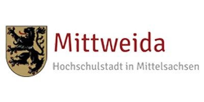
Stadt Mittweida
Konsortialführerin
Umsetzung über die städtische MWE
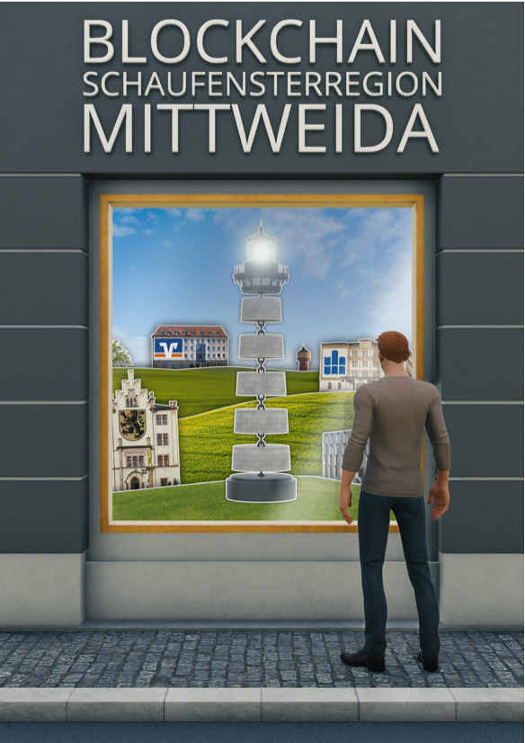


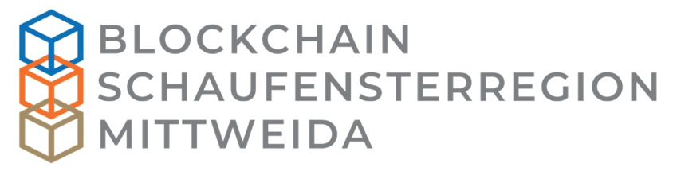
Demonstratortag
OB Ralf Schreiber
Prof. Dr. Alexander Knauer
MaintainChain, Flex Smart und BBBio
Einladung zum Netzwerken und zum anschließenden Gründerforum
Rückblick BSRM
2019–2026: Ergebnisse, Wirkung und Ausblick
Blockchain erleben: blockchain-erleben.de
Gefördert vom BMFTR im Programm „WIR! – Wandel durch Innovation in der Region“
Das Konsortium
Die Blockchain-Schaufensterregion Mittweida (BSRM) ist ein vom Bund gefördertes „WIR!“-Bündnis, das seit 2019 Blockchain-Technologie erforscht, in der Region erlebbar macht und den Strukturwandel vorantreibt.

Konsortialführerin
Umsetzung über die städtische MWE
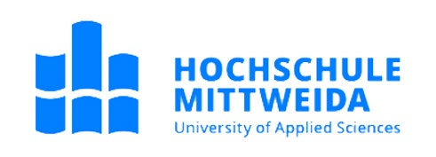
Forschung
über das Blockchain Competence Center Mittweida (BCCM)
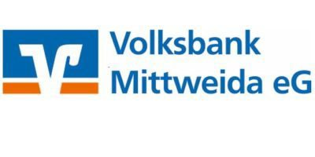
Größte Genossenschaftsbank Sachsens
Finanzierungs-Know-how
Ziel: Mittweida als bundesweit sichtbares Zentrum für Blockchain-Innovationen mit direktem Nutzen für regionale Unternehmen, Verwaltung und Bevölkerung zu etablieren.
Kennzahlen
Zeitleiste
Aufnahme in das WIR!-Programm des Bundes (BMFTR) im April 2019
Über 50 Projektideen eingereicht. Grünes Licht für erste Projekte: WIR!-Bundesförderung
Beirat bewilligt u. a. ECHT, UNICO, BRIDGER und weitere Vorhaben. Erste Projektabschlüsse (Mobility4All)
Online- und Social-Media-Auftritte, Vorstellung auf Fachkonferenzen, Gründung BCCM Inkubator GmbH
Programmende 12/2026, letzte Projekte laufen aus. Übergang in nachhaltige, regionale Strukturen
Gartner Hype Cycle
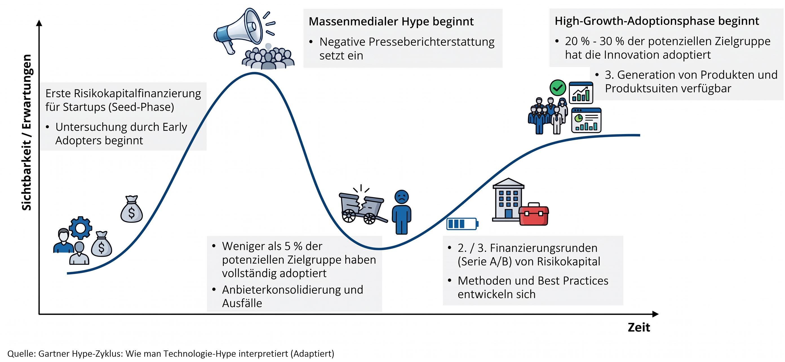
Projekte
Vorstellung der Projekte
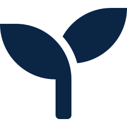
Energie & Nachhaltigkeit
Digitale Nachweise für Herkunft, Verarbeitung und Nachhaltigkeit von Biomasse. Ergänzt und vereinfacht bestehende Nachweisverfahren.
Partner: Hochschule Mittweida, Ökotec-Biogas GmbH & Co. KG
Industrie & digitale Services
Tokenisierte Nutzungs- und Zugangsrechte sowie flexible Preisgestaltung, zum Beispiel für Sport und Tourismus.
Partner: Hochschule Mittweida, Sportfreunde Gahlenz e. V., FLOGTOOF UNITED UG
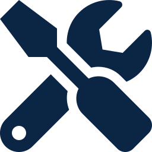
Industrie & digitale Services
Remote-Wartung mit Augmented Reality, automatischer Erfassung von Arbeitsschritten und sicherer Blockchain-Dokumentation.
Partner: Hochschule Mittweida, Fraunhofer IWU, NSH TECHNOLOGY GmbH
Clustermanagement
Als Konsortialführerin übertrug die Stadt Mittweida die operative Steuerung des Bündnisses an die Mittweidaer Wirtschafts- und Entwicklungsgesellschaft (MWE GmbH). Das Clustermanagement war die zentrale Anlaufstelle für alle Akteure.
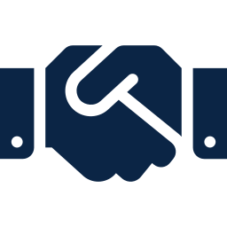
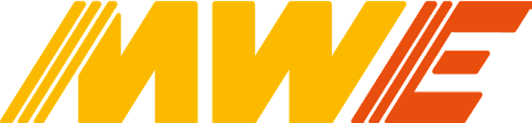
Strukturen
Blockchain Competence Center Mittweida: zentrale Forschungs- und Transferplattform der Hochschule.
Neu gegründet, um Forschung zu Blockchain & KI in marktfähige Produkte zu überführen.
Gründernetzwerk SAXEED sowie Coworking, Werkbank32 und Silicon-Valley-Programm der Volksbank-Tochter.
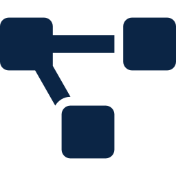
Kontakte zum Silicon Valley, nach New York und Estland. Zusammenarbeit mit IHK und Fachkräfteallianz Mittelsachsen.
Rund 150 Akteure von KMU über Hochschulen bis zu Bundes- und Landesministerien nutzen das Ökosystem aktiv.
Ausblick
Die BCCM Inkubator GmbH überführt Blockchain-Forschungsergebnisse in Verbindung mit KI in marktfähige Produkte.
Masterstudiengang und Lernplattform der Blockchain Academy, die auch für weitere Angebote wie BOLT genutzt wird.
Gewachsene Kooperationen zwischen Hochschule, Unternehmen, Volksbank, Verwaltung, IHK und internationalen Partnern.
Demonstratoren und Pilotanwendungen aus 24 Projekten, z. B. Like2Pay, Chainlock, IWCeID und Decentralized Storage.
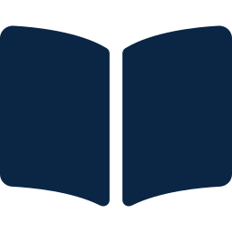
Projektübersicht „Blockchain erleben“ und Videovorstellung machen die Ergebnisse dauerhaft zugänglich.
Marketing
Social Media
Die Blockchain-Schaufensterregion berichtet dort regelmäßig über Projekte, Ergebnisse und Veranstaltungen.
LinkedInAlle Beiträge ansehenlinkedin.com/company/blockchain-schaufensterregion-mittweida→Experteninterviews
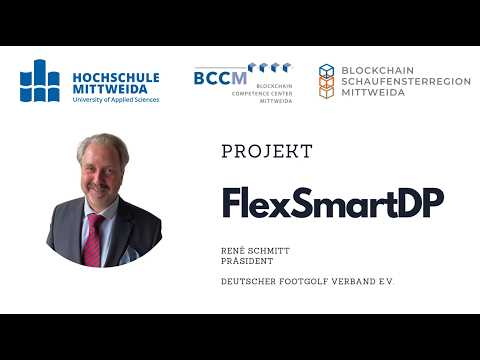
▶ FlexSmart-DP · ExperteninterviewWeitere Interviews: youtube.com/@blockchain-schaufensterreg306
Website
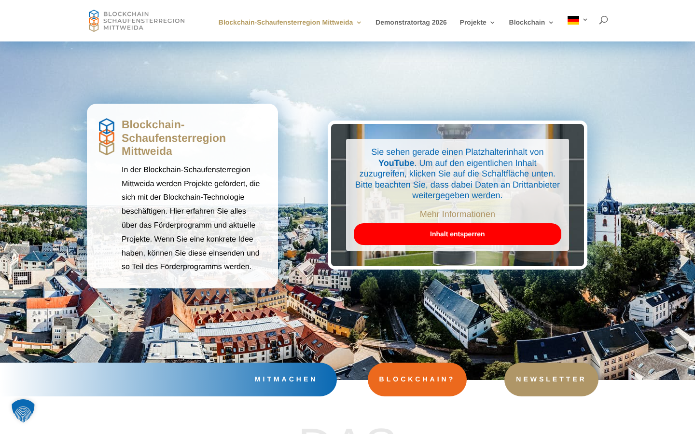
Zur Website öffnen →Projektübersicht
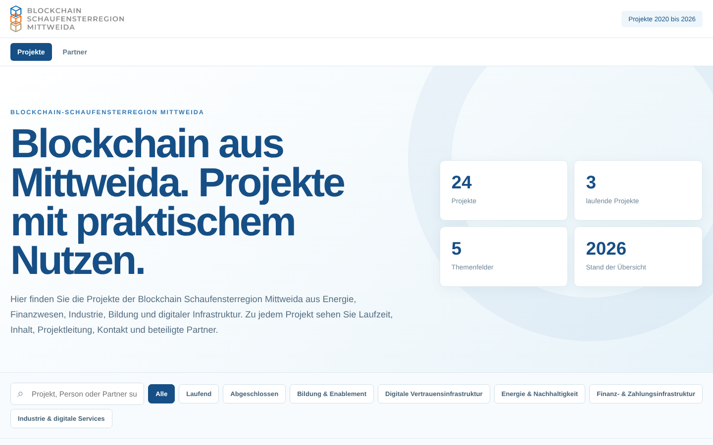
Zur Projektübersicht öffnen →Presse
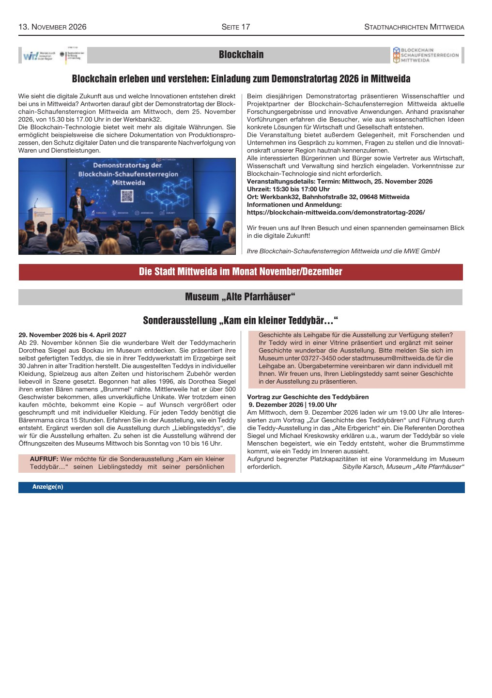
Stadtnachrichten Mittweida · 13.11.2026 · öffnen →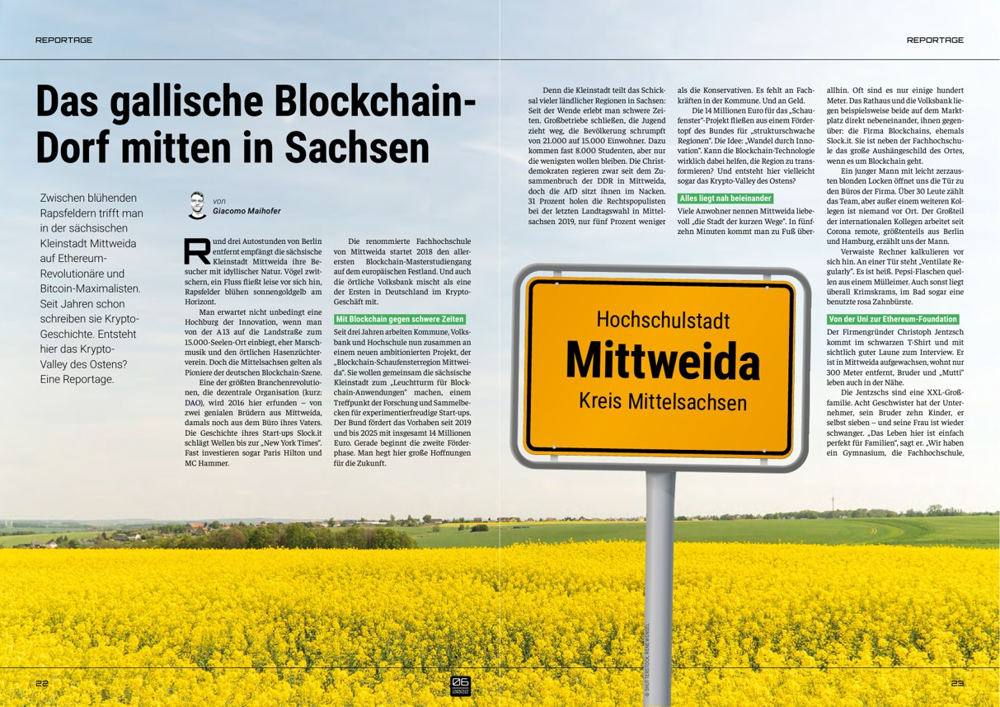
BTC echo: „Das gallische Blockchain-Dorf mitten in Sachsen“Newsletter & Presse
Fazit
Seit 2019 hat sich Mittweida, getragen von Stadt, Hochschule und Volksbank, zu einem bundesweit sichtbaren Zentrum für Blockchain-Innovationen entwickelt.
24 Forschungs- und Umsetzungsprojekte, rund 15 Mio. € Bundesförderung und rund 150 beteiligte Akteure zeigen die wirtschaftliche und wissenschaftliche Wirkung des WIR!-Bündnisses.
Das Clustermanagement der MWE GmbH (Projektunterstützung, Netzwerkarbeit und Marketing) bildet eine tragende Säule dieses Erfolgs.
Das Förderprogramm endet Ende 2026. Die Weichen für eine dauerhafte Struktur über die Förderung hinaus sind gestellt.
Herzlichen Dank an alle Partner, Projektteams und Unterstützer!
Leertaste oder Pfeiltasten zum Weiterblättern · F für Vollbild